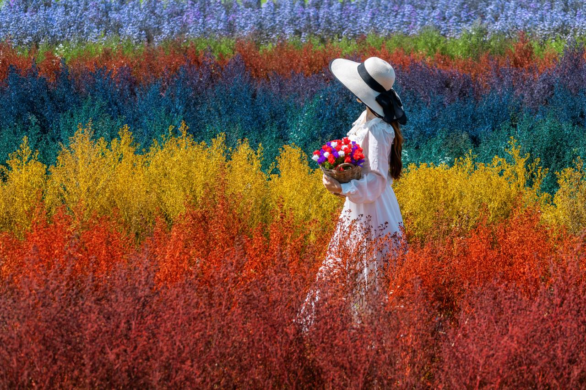

Lektion vom 13.01.2026
Heute habe ich folgendes gelernt:
Der Sensor ist das wichtigste Stück der Kamera. Er besteht aus über 2 Mio einzelnen, lichtempfindlichen Pixeln, die Licht in elektrische Spannung umwandeln und an den Prozessor weiterleiten können. Sie können, ähnlich wie das Auge feststellen, wie viel Licht auf sie trifft und in welcher Farbe.
Das Objektiv sorgt dafür, dass man auf Fotos überhaupt etwas sieht. Es fokussiert das Licht und bündelt es auf den Sensor, sodass die Pixel das Bild auch wirklich wahrnehmen und verarbeiten können. Die Linse entscheidet durch Verschieben, welcher Teil des Fotos scharf ist, also ob Licht aus der Nähe oder aus der Ferne gebündelt wird. Das kennt man auch als “fokussieren”. Viele Objektive haben zusätzliche “Zoom-Linsen”, mit denen man einstellen kann, welchen Bildausschnitt man gerade sieht.
Die Blende befindet sich im inneren des Objektivs, sie wird auch “Iris” genannt. Sie kann sich öffnen und schliessen und reguliert die Lichtmenge, die auf den Sensor trifft, sodass das Foto weder unter- noch überbelichtet ist. Wenn sie weit geöffnet ist, kommt viel Licht auf den Sensor. Wenn sie aber fast geschlossen ist, trifft eher weniger Licht auf den Sensor. Man kann in Zahlen von 1-32 f angeben, wie weit die Blende geöffnet ist. 1 bedeutet, dass viel Licht auf den Sensor treffen kann, 32 bedeutet, dass ganz wenig Licht auf den Sensor treffen kann.
Die Brennweite (Zoom) bestimmt, ob Licht aus einem grossen oder aus einem Kleinen Bereich auf den Sensor trifft. Also kann man mit der Brennweite sagen, wie fest ein Foto gezoomt ist. Eine lange Brennweite heisst, dass man nahe gezoomt hat, also Licht aus einem kleinen Bereich auf den Sensor trifft. Eine kurze Brennweite jedoch bedeutet, dass man herausgezoomt hat, also Licht aus einem grösseren Bereich auf den Sensor trifft. Die normale Brennweite einer Kamera entspricht etwa der dem menschlichen Auge und somit ca. 50mm. Brennweiten unter 50mm gelten als Weitwinkel. Brennweiten über 50mm nennt man Teleobjektive. Je länger die Brennweite ist, desto kleiner ist der scharfe Bereich und je kürzer sie ist, desto grösser ist er.
Die Verschlusszeit (Belichtungszeit, Shutter Speed) Ein Film besteht aus vielen einzelnen Bildern. Davon braucht man mindestens 25 pro Sekunde, dass wir es als Bewegtbild wahrnehmen. Ein “Frame”, also ein Foto ist demnach eine 1/25 Sekunde lang. In 1/25 Sekunde kann aber viel passieren und es kann zu Bewegungsunschärfe kommen. Deswegen muss man die Verschlusszeit verkürzen, also die Zeit, die ein “Frame” einfängt. Wenn diese in einem bewegten Moment verkürzt ist und man ein Foto schiesst, wird die Bewegungsunschärfe vermindert. Ein Nachteil der kurzen Verschlusszeit is, dass in dieser kurzen Zeit nicht so viel Licht eingefangen werden kann.
ISO ist ein Wert, der bestimmt, wie Lichtempfindlich eine Kamera ist. Wenn der ISO-Wert hoch is, nimmt die Kamera viel Licht wahr. Wenn der ISO-Wert tief is, nimmt die Kamera wenig Licht wahr. Man kann den ISO-Wert selber verstellen, je nachdem, wie hell oder wie dunkel man seine Fotos haben möchte.
Mit dem Weissabgleich kann man äussere Einflüsse auf das Licht minimieren. Damit is gemeint, wenn das Abendlicht zum Beispiel gelblich is, dass es mehr ausgeglichen is, also dass man den Gelbanteil im Licht reduzieren und ausgleichen kann. Wenn der Weissabgleich aktiviert is, merkt der Prozessor, welche Farbe vorherrscht und korrigiert das.
Der Crop-Faktor beschreibt, wie gross der Ausschnitt ist, den die Kamera wahrnimmt. Man “schneidet” eigentlich einen Teil vom Bild ab, ohne zu zoomen.
Lektion vom 20.01.2026
Heute habe ich in der Praxis gelernt, wie man mit dem A-Modus und dem S-Modus einer Kamera arbeitet. Zudem konnte ich gerade noch einmal die Begriffe wiederholen und festigen. Auch habe ich noch einmal wiederholt, dass die ISO für die Lichtempfindlichkeit einer Kamera nach der Aufnahme des Fotos steht, die Blende macht das manuell vor dem Aufnehmen eines Fotos. Eine lange Belichtungszeit ergibt verschwommene Bilder, eine kurze dementsprechend scharfe Bilder.
Lektion vom 17.03.2026
Heute habe ich das erste mal Lightroom benutzt. Ich habe die grobe Benutzer*innenoberfläche kennengelernt und erste Bilder bearbeitet. Ich fand es am Anfang noch schwierig, mich zurechtzufinden, da ich mir alle Shortcuts und Bewegungen von Photoshop abgewöhnen musste. Grundsätzlich, war es aber einfacher und man hat mehr Möglichkeiten, Bilder grob zu bearbeiten. Man kann zum Beispiel einen radialen Verlauf machen und diesen zu einer Maske machen. Auch das Auswählen und Entfernen von Personen und Objekten ist einfacher und sauberer als in Photoshop.
Lektion vom 24.03.2026
Heute habe ich viel über die Physik des Lichts gelernt. Man ist sich nicht sicher, ob Licht in Wellen auftritt oder nicht. Die Lichtwellen sind aber viel kürzer als Schallwellen und sind schneller, dafür kommen sie nicht um Ecken oder grosse Objekte herum. Also es hängt immer von der Grösse der Wellen ab, wie weit sie kommen, wenn die Wellen etwa gleich sind wie das Objekt, um das sie herummüssen, geht das ohne Probleme. Da Lichtwellen aber so kurz und schnell sind (1 Milliarde km/h) kommen sie höchstens um Bakterien herum, was wir nicht merken.
Lektion vom 31.03.2026
Heute habe ich gelernt, welche verschiedenen Einstellungsgrössen es gibt und dass man in Filmen und kurzen Sequenzen ganz viele Einstellungsgrössen verwenden kann. Es gibt erstens die Supertotale, das sind grosse Landschaftsaufnahmen von weit weg. Dann kommt die Totale, bei der eine Person mit dem ganzen Körper sichtbar ist, die Umgebung aber ungefähr zum gleichen Anteil des Bildes. Nach der Totale gibt es die Halbtotale, diese zeigt immer noch den ganzen Menschen, jedoch näher. Die Amerikanische heisst so, weil sie dort endet, wo Cowboys in Western-Filmen ihren Revolver gehabt haben, also ungefähr auf Hüfthöhe. Die nächst kleinere Einstellung ist die Halbnahe, sie beginnt etwa beim Bauchnabel der Person. Danach kommt die Nahe, das ist die typische Portraiteinstellung, bei der man etwa auf Brusthöhe beginnt. Die Grosse beginnt knapp unter dem Kinn der Person, zeigt aber noch den ganzen Körper und zum Schluss wäre da noch die Detaileinstellung oder das Close-Up. Da sind wirklich, wie der Name schon sagt, ganz kleine Details zu sehen, zum Beispiel nur ein Auge oder ganz feine Härchen.

Lektion vom 07.04.2026
Heute haben wir mit einer praktischen Aufgabe die Einstellungsgrössen geübt. Mir ist aufgefallen, dass die diagonale Komposition noch schwierig zu erzielen ist, wenn man keine schrägen Objekte hat. Am besten geht es dann, wenn man mit dem Hintergrund und der Perspektive spielt, also dass etwas schräg wirkt, welches gar nicht schräg ist. Grundsätzlich muss man aber immer auf die Umgebung achten und die Wirkung miteinbeziehen, die entstehen wird. Auch habe ich noch gelernt, wie ich am besten meine Fotos in Photoshop bearbeiten sollte. Ich werde mit einem Preset vorgehen und immer in ähnlichen Lichtverhältnissen fotografieren, damit ich möglichst ähnliche Ergebnisse erzielen kann.
Lektion vom 28.04.2026
In der heutigen Lektion haben wir uns angeschaut, welche verschiedenen Dateiformate es gibt. Vieles wusste ich schon, doch was ich neu gelernt habe war, dass jede Kameramarke eine andere Endung für ihre RAW-Formate hat. Zudem ist RAW keine Abkürzung und bedeutet eigentlich einfach, dass es sich um Rohdaten handelt. Rohdaten erkennt man dadurch, dass sie ganz viel Bildinformation beinhalten und dadurch auch mehr Speicherplatz brauchen.
Lektion vom 05.05.2026
Diese Lektion war eine Mischung aus Praxis und Theorie. Als erstes habe ich einmal einen Input zu der Bittiefe gelesen, was mir nochmal vieles erklärt hat. Dann habe ich mit den Aufträgen begonnen. Als erstes mussten wir ein RAW mit einem JPG vergleichen. Im Lightroom habe ich die Tiefen ganz nach oben geschoben und die Lichter ganz nach unten genommen. Hier habe ich gemerkt, dass beim RAW das Bild nicht so dunkel wird und dass es scharf bleibt. Beim JPG wird alles ein wenig verschwommener und dunkler. In den dunkeln Tönen habe ich einen Grünstich bemerkt. Dann habe ich ein farbenfrohes Bild von mir genommen und es in Photoshop auf drei verschiedene Arten exportiert. Einmal JPG, einmal als TIFF und einmal als PNG. Dann habe ich die Bilder verglichen. Folgendes ist mir aufgefallen: Da das PNG nur eine Bittiefe von 8 hat, wurde es bei mir eher matt, während das JPG noch sattere Farben hatte. Beim TIFF hatte ich das Gefühl, dass es minimal schärfer war als das JPG, sonst habe ich keine grossen Unterschiede bemerkt. Also JPG und RAW waren fast gleich, die einzigen grossen Unterschiede waren zum PNG.

Lektion vom 12.05.2026
Heute habe ich mit einem Image-Converter die Bittiefe eines Bildes verändert.
Die Bittiefe zeigt eigentlich, wie groß die Auswahl an Farben ist, die ein Pixel nutzen kann.
Jeder Pixel hat ja die Kanäle Rot, Grün und Blau. Im Normalfall (8-Bit) kann jeder dieser Kanäle 256 Farben speichern. Wenn man das hochrechnet (256 x 256 x 256), kommt man auf über 16 Millionen Farben, die der Pixel theoretisch speichern kann. Hier bei diesem Bild, bei welchem ich die Bittiefe verkleinert habe, merkt man gut, dass diese Pixel nicht mehr so viele Farben speichern können, was das Bild weniger akkurat macht.

Als zweites habe ich dasselbe Bild mit einer geschätzten Bittiefe von ca. 12-Bit einmal per WhatsApp versendet. Man merkt deutlich, dass das Bild komprimiert wird und dadurch Bildinformationen verloren gehen. Es hat einfach nicht mehr die gleiche Qualität wie vorher. Auch habe ich das Gefühl, dass das Original-Bild sattere Farben und bessere Verläufe zeigt. Ich schätze das neue Bild auf etwa 8-Bit.

Bei der dritten Aufgabe habe ich ganz schnell einen Unterschied zwischen den verschiedenen Farbräumen gefunden. Ich habe extra ein Bild ausgewählt, welches ganz viele sehr vibrante Farben enthält. Dann habe ich in Photoshop den Farbraum einmal auf sRGB umgestellt und das Bild exportiert und einmal habe ich das selbe mit RGB gemacht. Sofort ist mir aufgefallen, dass das normale RGB mir die Neon-Farben viel gesättigter gezeigt hat und das sRGB eher matte, dreckige Farben dargestellt hat. Ich finde das macht aber eigentlich Sinn, weil sRGB der kleinere Farbraum ist und weniger Farben zeigen kann.
Lektion vom 19.05.2026
Heute habe ich viel über das Urheberrecht von Werken gelernt. Die Urheber:in eines Bildes oder eines Fotos (Es können viele Dinge sein weshalb man hier von Werken spricht) darf darüber entscheiden, inwiefern das Werk von wem und wie verwendet werden darf oder ob man zum Beispiel noch einen Namen hinzufügen muss oder ob man es verändern darf oder nicht. Nicht alles ist aber geschützt, ein Werk muss erst einzigartig sein, damit diese Schöpfungshöhe erreicht wird.
Es gibt sogenannte Creative Commons (CC’s). Das sind Labels, die einmal bestimmt wurden, damit das Urheberrecht geregelt ist.
- BY: Namensnennung zwingend erforderlich.
- NC: Keine kommerzielle Nutzung erlaubt.
- ND: Keine Bearbeitung/Veränderung erlaubt.
- SA: Weitergabe unter gleichen Bedingungen.
- CC0: Verzicht auf alle Urheberrechte.
Wenn man ein Werk nutzen möchte, muss man immer eine Quelle angeben, zudem darf man fremde Werke nicht einfach zur Ausschmückung verwenden, sondern sie müssen einen bestimmten Zweck haben.
Auch hat man als Privatperson einen gewissen Schutz und das Recht am eigenen Bild und Ton. Das bedeutet, dass man nicht einfach ein Bild oder eine Audioaufnahme von jemandem machen darf und diese Online schalten darf, ohne dass man deren ausdrückliche Zustimmung hat. Es gibt aber Ausnahmen, bei denen man Bilder machen und veröffentlichen darf, ohne die Zustimmung einer Person zu haben:
- Feste oder Demos
- Personen der Geschichte
- Person steht nicht im Fokus des Geschehens
Man darf an öffentlichen Orten ohne Bewilligung filmen oder fotografieren, wenn man keine speziellen Hilfsmittel (wie ein Stativ oder eine Drohne) verwendet.
Lektion vom 26.05.2026
Wir haben uns heute einen speziellen Bereich des Datenschutzgesetzes angeschaut. Und zwar den Drohnenflug. Bis 250g gelten diese als “leicht” und man muss daher kein Zertifikat und keinen Kurs. Man muss sich aber immer wenn man fliegen möchte die Lufträume anschauen und sichergehen, dass man nicht gegen die Privatsphäre von Personen verstösst oder gar gegen Luftschutzrichtlinien vom Militär. Wenn man diese Regeln missachtet kann es zu schweren Unfällen kommen.